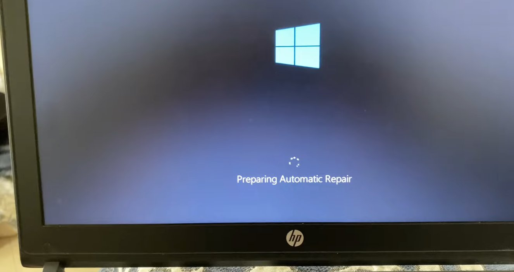
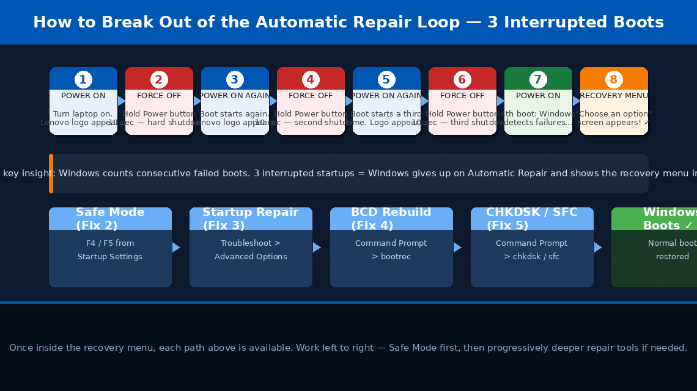
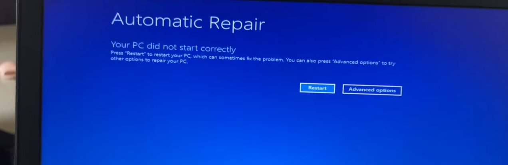
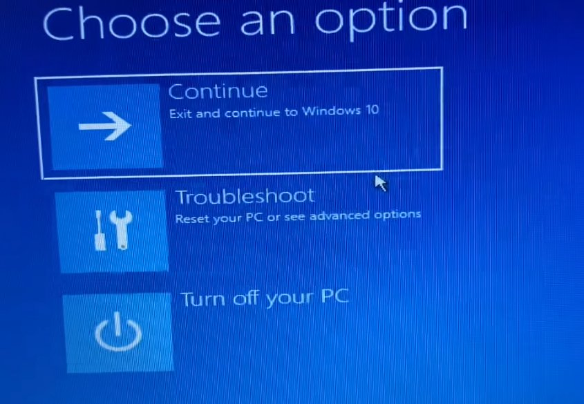
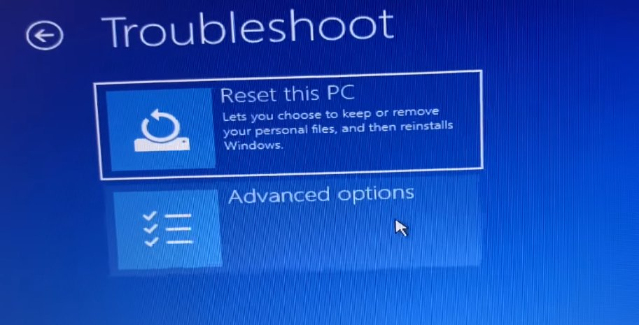
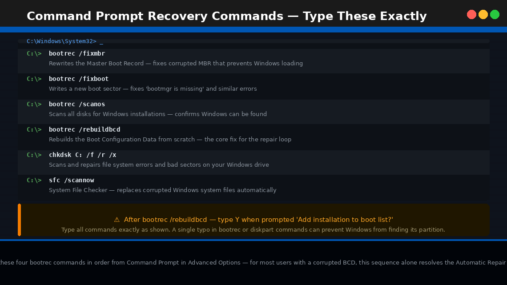

Preparing Automatic Repair. Spinning Circle. Repeat.
There’s nothing more stomach-dropping than turning on your Lenovo laptop in the morning, watching it start to boot, and then seeing those words appear on a dark screen: “Preparing Automatic Repair.” You wait. A spinning circle. More waiting. Then either a black screen that goes nowhere, or the laptop restarts itself — only to show you the exact same message again. And again.
You’re caught in a loop. Windows promised to fix itself. It hasn’t. And now you can’t get past the boot screen, you can’t access your files, and every restart takes you back to exactly the same place.
The panic that sets in here is understandable — especially if you have work documents, photos, or anything important on that drive. But here’s what you need to know immediately: the Automatic Repair loop almost never means your data is gone. In the vast majority of cases, your files are sitting completely intact on the hard drive. The problem is with Windows itself — specifically, the files Windows needs to start properly have become corrupted or misconfigured — and that is a problem that can be fixed.
This guide walks you through exactly what the loop means, how to break out of it using Safe Mode and Windows recovery tools, and what to do if those methods don’t work — all without losing your data wherever possible.
What Does “Preparing Automatic Repair” Mean?
In plain English, “Preparing Automatic Repair” means Windows has detected that it failed to boot successfully and has launched its own built-in recovery tool to try to fix whatever went wrong.
Every time Windows starts, it runs through a sequence of boot steps — loading the bootloader, initialising the kernel, starting system services, loading drivers. When this sequence fails two times in a row — because of a corrupted file, a failed update, a sudden shutdown at the wrong moment, or a driver conflict — Windows automatically activates a recovery mode called Automatic Repair (or Startup Repair).
When the repair tool fails — which happens more often than Microsoft would like — you see one of several outcomes:
- The screen spins forever and never progresses
- You see “Diagnosing your PC” followed by a black screen
- You see “Automatic Repair couldn’t repair your PC” with limited options
- The laptop restarts and the whole sequence repeats in a loop
The four most common triggers for this loop are:
- A Windows Update that failed or was interrupted — particularly during a major feature update if the laptop lost power or was force-shut down during the process.
- Corrupted Boot Configuration Data (BCD) — the file Windows reads at startup to know how and where to load the operating system. If this file becomes corrupted, Windows can’t start, triggering the repair loop every time.
- A recently installed driver or software that conflicts with Windows at the system level — particularly graphics drivers, antivirus software with kernel components, or third-party disk utilities.
- A failing or newly failing hard drive or SSD — physical storage problems manifest almost identically to software corruption because the end result is the same: Windows can’t read the files it needs.
In most cases, the fix is a software repair. In a smaller number of cases it involves the storage hardware — but even then, your data is usually recoverable first.

Tools You’ll Need
Here’s everything you may need across all the steps:
- Your Lenovo laptop
- A power adapter — keep it plugged in throughout. Do not run on battery during recovery operations
- A USB flash drive of at least 8GB — only needed for Fix 4 and beyond if creating a Windows recovery drive
- A second working computer with internet access (to download recovery tools if needed)
- About 30–60 minutes of your time depending on how far into the fixes you need to go
Step-by-Step Fixes (Easiest to Hardest)
Work through these in order. Many users escape the loop at Fix 1 or Fix 2. Do not skip ahead — each step gathers information that helps the next one if needed.
The most important first move is breaking out of the automatic loop so you can access Windows’ built-in recovery menu. You do this by interrupting the boot process three times in a row — which sounds aggressive but is completely safe and is the official Microsoft-documented method.
- If the laptop is currently in the loop, wait until you see the “Preparing Automatic Repair” or “Diagnosing your PC” screen.
- Press and hold the Power button for 10 seconds to force a hard shutdown.
- Power the laptop back on.
- As soon as you see the Lenovo splash screen (the Lenovo logo on a black background), press and hold the Power button again for 10 seconds to shut it off a second time.
- Power on again and repeat the forced shutdown a third time during the boot screen.
- On the fourth power-on, Windows detects the repeated failed boot attempts and instead of trying Automatic Repair again, it presents the “Choose an option” recovery screen — a blue screen with three tiles: Continue, Troubleshoot, and Turn off your PC.
- If you reach this screen, do not click anything yet — this is the gateway to all the fixes below. Proceed to Fix 2 immediately from this screen.


Safe Mode loads Windows with the bare minimum — no third-party drivers, no startup software, no non-essential services. If Windows can load in Safe Mode but not normally, the problem is almost certainly a driver or software conflict, and you can fix it from within Safe Mode itself.
- From the “Choose an option” recovery screen (reached in Fix 1), click Troubleshoot.
- Click Advanced Options.
- Click Startup Settings.
- Click Restart — the laptop will restart and present a numbered menu.
- Press F4 to boot into Safe Mode, or F5 to boot into Safe Mode with Networking (recommended — networking allows you to download updates or drivers if needed).
- Windows will attempt to boot with minimal drivers. This may take 2–3 minutes.
If Windows loads successfully in Safe Mode, do the following immediately:
- Open Device Manager (right-click Start > Device Manager) and look for any device with a yellow warning triangle — right-click it and select “Uninstall device.”
- Open Settings > Windows Update and install any pending updates, particularly any showing as “failed” or “pending restart.”
- If the loop started after installing new software, go to Control Panel > Programs > Uninstall a program and remove whatever was installed most recently before the problem began.
- Restart normally — not into Safe Mode — and observe whether Windows boots successfully.

If Safe Mode didn’t load or didn’t resolve the issue, the next step is running Startup Repair from the Windows recovery environment — a more thorough diagnostic than the Automatic Repair loop was performing on its own.
- Return to the “Choose an option” screen (repeat Fix 1 if needed).
- Click Troubleshoot > Advanced Options > Startup Repair.
- Windows will ask you to select an account — click your user account and enter your password if prompted.
- Startup Repair will run and attempt to detect and fix boot issues. This process takes 5–15 minutes — do not interrupt it or close the laptop lid.
- Once complete, the laptop will restart automatically. Observe whether Windows boots normally.

If Startup Repair couldn’t fix the problem, the Boot Configuration Data file is likely corrupted. This is one of the most common root causes of the Automatic Repair loop and can be fixed with four command-line instructions from the Windows recovery environment.
bootrec or diskpart can affect your system’s ability to find the Windows partition. Keep your laptop plugged into power for the entire duration of this fix.- From Advanced Options, click Command Prompt. Select your user account and enter your password if prompted.
- In the black Command Prompt window, type the following commands one at a time, pressing Enter after each:
bootrec /fixboot
bootrec /scanos
bootrec /rebuildbcd
- After
bootrec /rebuildbcd, Windows will scan for installations and ask “Add installation to boot list? Yes/No/All” — type Y and press Enter. - Once all four commands have completed, type
exitand press Enter. - Click Continue to restart the laptop normally.
- Observe whether Windows boots successfully. For many users with a corrupted BCD, these four commands resolve the loop completely.

bootrec commands in order from Command Prompt in Advanced Options — for most users with a corrupted BCD, this sequence alone resolves the Automatic Repair loop without touching any personal files.If BCD repair didn’t fix the boot, the next layer to address is corrupted Windows system files on the drive itself. Two built-in Windows tools — CHKDSK (Check Disk) and SFC (System File Checker) — can scan and repair these without deleting your data.
- Return to Command Prompt from Advanced Options (same as Fix 4, step 1).
- First, identify which drive letter Windows is installed on — in the recovery environment it is often D: rather than C:. Type these commands to check:
dir D:
The drive containing folders named Windows, Users, and Program Files is your Windows installation drive. Use that letter in the commands below.
- Run CHKDSK to repair file system errors (substitute C: or D: as appropriate):
This scan can take 20–45 minutes on a hard drive or 10–20 minutes on an SSD. Do not interrupt it.
- Once CHKDSK completes, run the System File Checker:
- SFC will scan and automatically replace any corrupted protected system files it finds. This takes 10–20 minutes.
- Type
exitwhen complete and restart the laptop normally.
If your laptop had System Restore points created before the problem started — which Lenovo’s recovery setup typically enables by default — you can roll Windows back to a point when everything was working, without affecting your personal files.
- From Advanced Options, click System Restore.
- Click Next to see a list of available restore points.
- If restore points are available, select the most recent one dated before the loop began.
- Click Next, then Finish to begin the restore. The process takes 15–30 minutes and will restart the laptop automatically.
- If restore points are listed as unavailable, System Restore was disabled on this installation — proceed to Fix 7.
If all software fixes have failed, a Windows reset or clean reinstall is the next step. But before doing anything that risks your files, back up your data first. Windows recovery tools include a way to access your files even when Windows won’t boot.
- From Advanced Options, open Command Prompt.
- Insert a USB flash drive into the laptop.
- Type
notepadin Command Prompt and press Enter — Notepad will open. Go to File > Open to browse your file system and confirm your files are visible and intact. - Use Command Prompt to copy critical files to the USB drive:
(Replace D: with your Windows drive letter, YourName with your actual username, and E: with your USB drive letter.)
- Once your critical files are safely copied, return to Troubleshoot > Reset this PC — choose “Keep my files” first.
- If that fails to boot successfully after the reset, repeat with “Remove everything” for a full clean install.
When to Call a Professional
The Automatic Repair loop is one of the more complex laptop problems to resolve at home, and there are clear situations where professional help protects both your data and your hardware:
- CHKDSK reports a large number of bad sectors — particularly above a few dozen. This is a physical hard drive problem. Stop all repairs, back up your data immediately, and replace the drive.
- You hear clicking, grinding, or repeated seeking sounds from the laptop during boot attempts. This is the sound of a physically failing hard drive. Every additional boot attempt risks making data recovery harder. Shut the laptop down and take it to a professional data recovery service immediately.
- The laptop completes a full Windows reset but immediately enters the Automatic Repair loop again after the reset. This is a strong indicator of a hardware fault — either a failing SSD, a RAM problem, or a corrupted BIOS. Requires professional diagnosis.
- You are not comfortable with Command Prompt. The BCD rebuild and CHKDSK commands in Fix 4 and Fix 5 are safe when typed correctly but can cause unintended consequences if mistyped. Many computer repair shops will perform these exact fixes for a modest fee.
- Your Lenovo laptop is under warranty. Lenovo offers a standard 1-year warranty on most consumer laptops (ThinkPad models often carry longer coverage). If the laptop is within its warranty period, contact Lenovo support — software and hardware repairs are covered at no cost.
To reach Lenovo support:
- India: support.lenovo.com/in — Customer care: 1800-419-7555 (toll-free)
- US: support.lenovo.com — Phone: 1-855-253-6686
Have your laptop’s serial number (on the bottom sticker) ready — Lenovo can instantly look up your exact model, warranty status, and available service options.
Quick Summary
| Fix | Difficulty | Time Needed |
|---|---|---|
| Force interrupt boot to access recovery menu | Very Easy | 3 minutes |
| Boot into Safe Mode and remove conflicting drivers | Easy | 15 minutes |
| Run Startup Repair from Advanced Options | Easy | 15 minutes |
| Rebuild Boot Configuration Data via Command Prompt | Moderate | 10 minutes |
| Run CHKDSK and SFC to repair system files | Moderate | 30–60 minutes |
| System Restore to a previous working point | Easy | 20 minutes |
| Back up files, then reset Windows | Moderate | 45–90 minutes |
Start at Fix 1 and work forward. The three-interrupted-boot trick to reach the recovery menu is the gateway to everything else — once you’re in the Advanced Options environment, every other tool is at your disposal. Safe Mode (Fix 2) and BCD rebuild (Fix 4) resolve this loop for the large majority of users who reach them.
Still stuck after working through every fix? The single most useful diagnostic at that point is removing the hard drive and connecting it to another laptop via a USB enclosure (available for ₹400–₹800 online). If the drive shows up and your files are readable, the drive is fine and the problem is software-only — a clean Windows install will fix it. If the drive doesn’t appear at all, data recovery services are your next call before anything else.